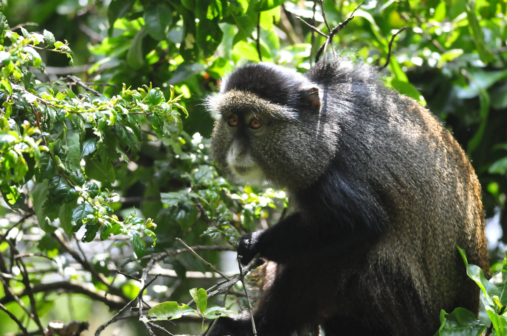

Golden monkey tracking in Mgahinga feels lighter and quicker than gorilla trekking, but no less enchanting. The bamboo zone is bright in places, whispery in others, and when the monkeys arrive they do so with a kind of acrobatic sparkle. Their orange-gold coats catch the forest light in flashes, making the whole encounter feel animated and playful.
What travelers often love most is the mood. Gorillas inspire reverence. Golden monkeys invite delight. They move fast, appear in clusters, and seem to turn the forest into a stage of constant motion. Watching them leap between stems and pause just long enough for a clear look gives the trek a buoyant energy that stays with people.
Mgahinga adds its own magic. The volcanic backdrop, the cool air, and the sense of being tucked into the Virunga landscape make the experience feel rarer than many visitors expect. It is one of those places where scenery and wildlife collaborate beautifully.
Why Mgahinga Feels Special
Mgahinga is compact, but it does not feel small. The park carries mountain drama in every direction. Bamboo gives way to steep volcanic forms, and even a short forest walk holds a sense of altitude and edge. That setting gives the monkeys an unusually cinematic home.
The experience also feels less crowded and more tucked away than better-known stops. For travelers who enjoy the idea of finding one of Uganda's quieter treasures, Mgahinga often becomes a favorite.
A Different Kind Of Primate Encounter
Golden monkeys create a faster, more mischievous form of wildlife viewing. You are always slightly adjusting your gaze, following movement, and trying not to laugh when a branch suddenly fills with restless bodies and bright faces. It keeps the trek lively from start to finish.
That playfulness is exactly why this experience complements the weightier atmosphere of gorilla trekking so well. Together, they show two very different emotional sides of Uganda's primate world.
Why Travelers Should Not Overlook It
Some visitors arrive in the southwest focused entirely on gorillas and leave surprised that golden monkeys became one of the most joyful moments of the trip. Mgahinga proves that not every unforgettable wildlife memory has to be solemn or grand. Some are bright, quick, and full of life.
For readers building a southwest itinerary, this is one of the smartest additions you can make if you want the region to feel broader, more textured, and more memorable.